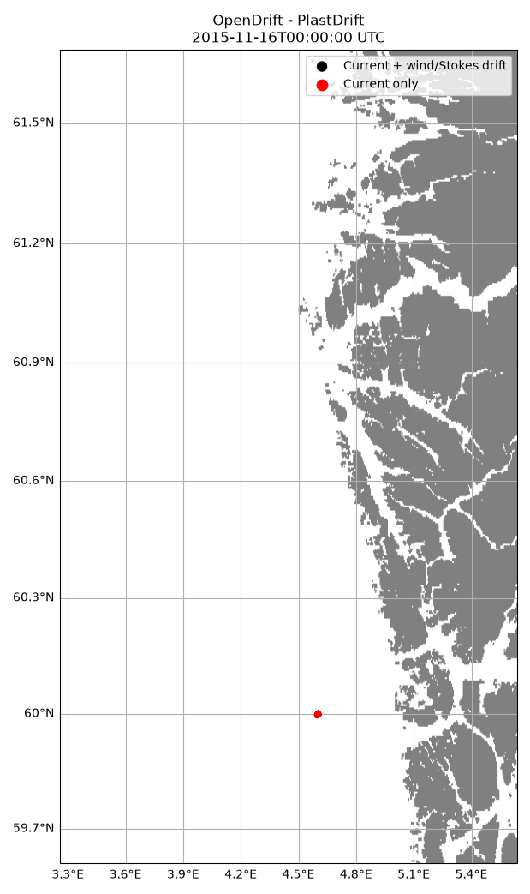

Note
Go to the end to download the full example code.
Plastic
from datetime import timedelta
from opendrift import test_data_folder as tdf
from opendrift.readers import reader_netCDF_CF_generic
from opendrift.models.plastdrift import PlastDrift
o = PlastDrift(loglevel=20)
o.list_configspec() # to see available configuration options
# Arome atmospheric model
reader_arome = reader_netCDF_CF_generic.Reader(tdf + '16Nov2015_NorKyst_z_surface/arome_subset_16Nov2015.nc')
# Norkyst ocean model
reader_norkyst = reader_netCDF_CF_generic.Reader(tdf + '16Nov2015_NorKyst_z_surface/norkyst800_subset_16Nov2015.nc')
o.add_reader([reader_norkyst, reader_arome])
start_time = reader_arome.start_time
end_time = reader_arome.start_time + timedelta(hours=5)
end_time = reader_arome.end_time
time = [start_time, start_time + timedelta(hours=5)]
12:07:26 INFO opendrift:569: OpenDriftSimulation initialised (version 1.14.11 / v1.14.12-45-g2e494c3)
environment:constant:x_sea_water_velocity [None] float min: -15, max: 15 [m/s] Component of ocean c...
environment:fallback:x_sea_water_velocity [0] float min: -15, max: 15 [m/s] Component of ocean c...
environment:constant:y_sea_water_velocity [None] float min: -15, max: 15 [m/s] Component of ocean c...
environment:fallback:y_sea_water_velocity [0] float min: -15, max: 15 [m/s] Component of ocean c...
environment:constant:sea_surface_height [None] float min: None, max: None [None] Use constant value f...
environment:fallback:sea_surface_height [0] float min: None, max: None [None] Fallback value for s...
environment:constant:sea_surface_wave_stokes_drift_x_velocity [None] float min: None, max: None [None] Use constant value f...
environment:fallback:sea_surface_wave_stokes_drift_x_velocity [0] float min: None, max: None [None] Fallback value for s...
environment:constant:sea_surface_wave_stokes_drift_y_velocity [None] float min: None, max: None [None] Use constant value f...
environment:fallback:sea_surface_wave_stokes_drift_y_velocity [0] float min: None, max: None [None] Fallback value for s...
environment:constant:sea_surface_wave_significant_height [None] float min: None, max: None [None] Use constant value f...
environment:fallback:sea_surface_wave_significant_height [0] float min: None, max: None [None] Fallback value for s...
environment:constant:x_wind [None] float min: -50, max: 50 [m/s] Component of wind al...
environment:fallback:x_wind [0] float min: -50, max: 50 [m/s] Component of wind al...
environment:constant:y_wind [None] float min: -50, max: 50 [m/s] Component of wind al...
environment:fallback:y_wind [0] float min: -50, max: 50 [m/s] Component of wind al...
environment:constant:ocean_vertical_diffusivity [None] float min: 0, max: 1 [None] Use constant value f...
environment:fallback:ocean_vertical_diffusivity [0.02] float min: 0, max: 1 [None] Fallback value for o...
environment:constant:ocean_mixed_layer_thickness [None] float min: None, max: None [None] Use constant value f...
environment:fallback:ocean_mixed_layer_thickness [50] float min: None, max: None [None] Fallback value for o...
environment:constant:sea_floor_depth_below_sea_level [None] float min: -20, max: 12000 [None] Depth of seafloor...
environment:fallback:sea_floor_depth_below_sea_level [10000] float min: -20, max: 12000 [None] Depth of seafloor...
environment:constant:land_binary_mask [None] float min: 0, max: 1 [None] 1 is land, 0 is sea...
environment:fallback:land_binary_mask [None] float min: 0, max: 1 [None] 1 is land, 0 is sea...
general:use_auto_landmask [True] bool A built-in GSHHG glo...
drift:current_uncertainty [0] float min: 0, max: 5 [m/s] Add gaussian perturb...
drift:current_uncertainty_uniform [0] float min: 0, max: 5 [m/s] Add gaussian perturb...
drift:max_speed [2.0] float min: 0, max: inf [seconds] Typical maximum spee...
readers:max_number_of_fails [1] int min: 0, max: 1000000.0 [number] Readers are discarde...
general:simulation_name [] str min length 0, max length 64 Name of simulation...
general:coastline_action [previous] enum ['none', 'stranding', 'previous'] None means that obje...
general:coastline_approximation_precision [0.001] float min: 0.0001, max: 0.005 [degrees] The precision of the...
general:time_step_minutes [60] float min: 0.01, max: 1440 [minutes] Calculation time ste...
general:time_step_output_minutes [None] float min: 1, max: 1440 [minutes] Output time step, i....
seed:ocean_only [True] bool If True, elements se...
seed:number [1] int min: 1, max: 100000000 [1] The number of elemen...
drift:max_age_seconds [None] float min: 0, max: inf [seconds] Elements will be dea...
drift:advection_scheme [euler] enum ['euler', 'runge-kutta', 'runge-kutta4'] Numerical advection ...
drift:profiles_depth [50] float min: 0, max: None [meters] Environment profiles...
drift:wind_uncertainty [0] float min: 0, max: 5 [m/s] Add gaussian perturb...
drift:relative_wind [False] bool If True, wind drift ...
drift:deactivate_north_of [None] float min: -90, max: 90 [degrees] Elements are deactiv...
drift:deactivate_south_of [None] float min: -90, max: 90 [degrees] Elements are deactiv...
drift:deactivate_east_of [None] float min: -360, max: 360 [degrees] Elements are deactiv...
drift:deactivate_west_of [None] float min: -360, max: 360 [degrees] Elements are deactiv...
seed:origin_marker [0] float min: None, max: None [None] An integer kept cons...
seed:z [0] float min: -10000, max: 0 [m] Depth below sea leve...
seed:wind_drift_factor [0.02] float min: None, max: None [1] Elements at surface ...
seed:current_drift_factor [1] float min: None, max: None [1] Elements are moved w...
seed:terminal_velocity [0.01] float min: None, max: None [m/s] Positive value means...
drift:vertical_advection [True] bool Advect elements with...
drift:vertical_advection_at_surface [False] bool If vertical advectio...
drift:water_column_stretching [False] bool If sea surface eleva...
drift:vertical_advection_correction [False] bool The vertical velocit...
drift:vertical_mixing [True] bool Activate vertical mi...
drift:vertical_mixing_at_surface [False] bool If vertical mixing i...
vertical_mixing:timestep [60] float min: 0.1, max: 3600 [seconds] Time step used for i...
vertical_mixing:diffusivitymodel [windspeed_Sundby1983] enum ['environment', 'stepfunction', 'windspeed_Sundby1983', 'windspeed_Large1994', 'constant'] Algorithm/source use...
vertical_mixing:background_diffusivity [1.2e-05] float min: 0, max: 1 [m2s-1] Background diffusivi...
vertical_mixing:TSprofiles [False] bool Update T and S profi...
drift:wind_drift_depth [0.1] float min: 0, max: 10 [meters] The direct wind drif...
drift:stokes_drift [True] bool Advection elements w...
drift:stokes_drift_profile [Phillips] enum ['monochromatic', 'exponential', 'Phillips', 'windsea_swell'] Algorithm to calcula...
drift:use_tabularised_stokes_drift [True] bool If True, Stokes drif...
drift:tabularised_stokes_drift_fetch [25000] enum ['5000', '25000', '50000'] The fetch length whe...
general:seafloor_action [lift_to_seafloor] enum ['none', 'lift_to_seafloor', 'deactivate', 'previous'] "deactivate": elemen...
drift:truncate_ocean_model_below_m [None] float min: 0, max: 10000 [m] Ocean model data are...
seed:seafloor [False] bool Elements are seeded ...
vertical_mixing:mixingmodel [analytical] enum ['randomwalk', 'analytical'] Scheme to be used fo...
12:07:26 INFO opendrift.readers:67: Opening file with xr.open_dataset
12:07:26 INFO opendrift.readers.reader_netCDF_CF_generic:340: Detected dimensions: {'time': 'time', 'x': 'x', 'y': 'y'}
12:07:26 INFO opendrift.readers:67: Opening file with xr.open_dataset
12:07:27 INFO opendrift.readers.reader_netCDF_CF_generic:340: Detected dimensions: {'x': 'X', 'y': 'Y', 'z': 'depth', 'time': 'time'}
Seeding some particles
lon = 4.6; lat = 60.0; # Outside Bergen
o.seed_elements(lon, lat, radius=50, number=3000, time=time)
o.run(end_time=end_time, time_step=1800, time_step_output=3600)
12:07:27 INFO opendrift.models.basemodel.environment:203: Adding a global landmask from GSHHG
12:07:34 INFO opendrift.models.basemodel.environment:227: Fallback values will be used for the following variables which have no readers:
12:07:34 INFO opendrift.models.basemodel.environment:230: sea_surface_height: 0.000000
12:07:34 INFO opendrift.models.basemodel.environment:230: sea_surface_wave_stokes_drift_x_velocity: 0.000000
12:07:34 INFO opendrift.models.basemodel.environment:230: sea_surface_wave_stokes_drift_y_velocity: 0.000000
12:07:34 INFO opendrift.models.basemodel.environment:230: sea_surface_wave_significant_height: 0.000000
12:07:34 INFO opendrift.models.basemodel.environment:230: ocean_vertical_diffusivity: 0.020000
12:07:34 INFO opendrift.models.basemodel.environment:230: ocean_mixed_layer_thickness: 50.000000
12:07:34 INFO opendrift.models.basemodel.environment:230: sea_floor_depth_below_sea_level: 10000.000000
12:07:34 INFO opendrift:1921: Storing previous values of element property lon because of condition (('general:coastline_action', 'in', ['stranding', 'previous']), 'or', ('general:seafloor_action', 'in', ['previous']))
12:07:34 INFO opendrift:1921: Storing previous values of element property lat because of condition (('general:coastline_action', 'in', ['stranding', 'previous']), 'or', ('general:seafloor_action', 'in', ['previous']))
12:07:34 INFO opendrift:958: Using existing reader for land_binary_mask to move elements to ocean
12:07:34 INFO opendrift:989: All points are in ocean
12:07:34 INFO opendrift:2237: 2015-11-16 00:00:00 - step 1 of 132 - 300 active elements (0 deactivated)
12:07:34 INFO opendrift:2237: 2015-11-16 00:30:00 - step 2 of 132 - 600 active elements (0 deactivated)
12:07:34 INFO opendrift:2237: 2015-11-16 01:00:00 - step 3 of 132 - 900 active elements (0 deactivated)
12:07:34 INFO opendrift:2237: 2015-11-16 01:30:00 - step 4 of 132 - 1200 active elements (0 deactivated)
12:07:34 INFO opendrift:2237: 2015-11-16 02:00:00 - step 5 of 132 - 1500 active elements (0 deactivated)
12:07:34 INFO opendrift:2237: 2015-11-16 02:30:00 - step 6 of 132 - 1800 active elements (0 deactivated)
12:07:34 INFO opendrift:2237: 2015-11-16 03:00:00 - step 7 of 132 - 2100 active elements (0 deactivated)
12:07:34 INFO opendrift:2237: 2015-11-16 03:30:00 - step 8 of 132 - 2400 active elements (0 deactivated)
12:07:34 INFO opendrift:2237: 2015-11-16 04:00:00 - step 9 of 132 - 2700 active elements (0 deactivated)
12:07:34 INFO opendrift:2237: 2015-11-16 04:30:00 - step 10 of 132 - 2999 active elements (0 deactivated)
12:07:34 INFO opendrift:2237: 2015-11-16 05:00:00 - step 11 of 132 - 3000 active elements (0 deactivated)
12:07:34 INFO opendrift:2237: 2015-11-16 05:30:00 - step 12 of 132 - 3000 active elements (0 deactivated)
12:07:34 INFO opendrift:2237: 2015-11-16 06:00:00 - step 13 of 132 - 3000 active elements (0 deactivated)
12:07:35 INFO opendrift:2237: 2015-11-16 06:30:00 - step 14 of 132 - 3000 active elements (0 deactivated)
12:07:35 INFO opendrift:2237: 2015-11-16 07:00:00 - step 15 of 132 - 3000 active elements (0 deactivated)
12:07:35 INFO opendrift:2237: 2015-11-16 07:30:00 - step 16 of 132 - 3000 active elements (0 deactivated)
12:07:35 INFO opendrift:2237: 2015-11-16 08:00:00 - step 17 of 132 - 3000 active elements (0 deactivated)
12:07:35 INFO opendrift:2237: 2015-11-16 08:30:00 - step 18 of 132 - 3000 active elements (0 deactivated)
12:07:35 INFO opendrift:2237: 2015-11-16 09:00:00 - step 19 of 132 - 3000 active elements (0 deactivated)
12:07:35 INFO opendrift:2237: 2015-11-16 09:30:00 - step 20 of 132 - 3000 active elements (0 deactivated)
12:07:35 INFO opendrift:2237: 2015-11-16 10:00:00 - step 21 of 132 - 3000 active elements (0 deactivated)
12:07:35 INFO opendrift:2237: 2015-11-16 10:30:00 - step 22 of 132 - 3000 active elements (0 deactivated)
12:07:35 INFO opendrift:2237: 2015-11-16 11:00:00 - step 23 of 132 - 3000 active elements (0 deactivated)
12:07:35 INFO opendrift:2237: 2015-11-16 11:30:00 - step 24 of 132 - 3000 active elements (0 deactivated)
12:07:35 INFO opendrift:2237: 2015-11-16 12:00:00 - step 25 of 132 - 3000 active elements (0 deactivated)
12:07:35 INFO opendrift:2237: 2015-11-16 12:30:00 - step 26 of 132 - 3000 active elements (0 deactivated)
12:07:35 INFO opendrift:2237: 2015-11-16 13:00:00 - step 27 of 132 - 3000 active elements (0 deactivated)
12:07:35 INFO opendrift:2237: 2015-11-16 13:30:00 - step 28 of 132 - 3000 active elements (0 deactivated)
12:07:35 INFO opendrift:2237: 2015-11-16 14:00:00 - step 29 of 132 - 3000 active elements (0 deactivated)
12:07:35 INFO opendrift:2237: 2015-11-16 14:30:00 - step 30 of 132 - 3000 active elements (0 deactivated)
12:07:35 INFO opendrift:2237: 2015-11-16 15:00:00 - step 31 of 132 - 3000 active elements (0 deactivated)
12:07:35 INFO opendrift:2237: 2015-11-16 15:30:00 - step 32 of 132 - 3000 active elements (0 deactivated)
12:07:35 INFO opendrift:2237: 2015-11-16 16:00:00 - step 33 of 132 - 3000 active elements (0 deactivated)
12:07:36 INFO opendrift:2237: 2015-11-16 16:30:00 - step 34 of 132 - 3000 active elements (0 deactivated)
12:07:36 INFO opendrift:2237: 2015-11-16 17:00:00 - step 35 of 132 - 3000 active elements (0 deactivated)
12:07:36 INFO opendrift:2237: 2015-11-16 17:30:00 - step 36 of 132 - 3000 active elements (0 deactivated)
12:07:36 INFO opendrift:2237: 2015-11-16 18:00:00 - step 37 of 132 - 3000 active elements (0 deactivated)
12:07:36 INFO opendrift:2237: 2015-11-16 18:30:00 - step 38 of 132 - 3000 active elements (0 deactivated)
12:07:36 INFO opendrift:2237: 2015-11-16 19:00:00 - step 39 of 132 - 3000 active elements (0 deactivated)
12:07:36 INFO opendrift:2237: 2015-11-16 19:30:00 - step 40 of 132 - 3000 active elements (0 deactivated)
12:07:36 INFO opendrift:2237: 2015-11-16 20:00:00 - step 41 of 132 - 3000 active elements (0 deactivated)
12:07:36 INFO opendrift:2237: 2015-11-16 20:30:00 - step 42 of 132 - 3000 active elements (0 deactivated)
12:07:36 INFO opendrift:2237: 2015-11-16 21:00:00 - step 43 of 132 - 3000 active elements (0 deactivated)
12:07:36 INFO opendrift:2237: 2015-11-16 21:30:00 - step 44 of 132 - 3000 active elements (0 deactivated)
12:07:36 INFO opendrift:2237: 2015-11-16 22:00:00 - step 45 of 132 - 3000 active elements (0 deactivated)
12:07:36 INFO opendrift:2237: 2015-11-16 22:30:00 - step 46 of 132 - 3000 active elements (0 deactivated)
12:07:36 INFO opendrift:2237: 2015-11-16 23:00:00 - step 47 of 132 - 3000 active elements (0 deactivated)
12:07:36 INFO opendrift:2237: 2015-11-16 23:30:00 - step 48 of 132 - 3000 active elements (0 deactivated)
12:07:36 INFO opendrift:2237: 2015-11-17 00:00:00 - step 49 of 132 - 3000 active elements (0 deactivated)
12:07:36 INFO opendrift:2237: 2015-11-17 00:30:00 - step 50 of 132 - 3000 active elements (0 deactivated)
12:07:36 INFO opendrift:2237: 2015-11-17 01:00:00 - step 51 of 132 - 3000 active elements (0 deactivated)
12:07:36 INFO opendrift:2237: 2015-11-17 01:30:00 - step 52 of 132 - 3000 active elements (0 deactivated)
12:07:37 INFO opendrift:2237: 2015-11-17 02:00:00 - step 53 of 132 - 3000 active elements (0 deactivated)
12:07:37 INFO opendrift:2237: 2015-11-17 02:30:00 - step 54 of 132 - 3000 active elements (0 deactivated)
12:07:37 INFO opendrift:2237: 2015-11-17 03:00:00 - step 55 of 132 - 3000 active elements (0 deactivated)
12:07:37 INFO opendrift:2237: 2015-11-17 03:30:00 - step 56 of 132 - 3000 active elements (0 deactivated)
12:07:37 INFO opendrift:2237: 2015-11-17 04:00:00 - step 57 of 132 - 3000 active elements (0 deactivated)
12:07:37 INFO opendrift:2237: 2015-11-17 04:30:00 - step 58 of 132 - 3000 active elements (0 deactivated)
12:07:37 INFO opendrift:2237: 2015-11-17 05:00:00 - step 59 of 132 - 3000 active elements (0 deactivated)
12:07:37 INFO opendrift:2237: 2015-11-17 05:30:00 - step 60 of 132 - 3000 active elements (0 deactivated)
12:07:37 INFO opendrift:2237: 2015-11-17 06:00:00 - step 61 of 132 - 3000 active elements (0 deactivated)
12:07:37 INFO opendrift:2237: 2015-11-17 06:30:00 - step 62 of 132 - 3000 active elements (0 deactivated)
12:07:37 INFO opendrift:2237: 2015-11-17 07:00:00 - step 63 of 132 - 3000 active elements (0 deactivated)
12:07:37 INFO opendrift:2237: 2015-11-17 07:30:00 - step 64 of 132 - 3000 active elements (0 deactivated)
12:07:37 INFO opendrift:2237: 2015-11-17 08:00:00 - step 65 of 132 - 3000 active elements (0 deactivated)
12:07:37 INFO opendrift:2237: 2015-11-17 08:30:00 - step 66 of 132 - 3000 active elements (0 deactivated)
12:07:37 INFO opendrift:2237: 2015-11-17 09:00:00 - step 67 of 132 - 3000 active elements (0 deactivated)
12:07:37 INFO opendrift:2237: 2015-11-17 09:30:00 - step 68 of 132 - 3000 active elements (0 deactivated)
12:07:37 INFO opendrift:2237: 2015-11-17 10:00:00 - step 69 of 132 - 3000 active elements (0 deactivated)
12:07:37 INFO opendrift:2237: 2015-11-17 10:30:00 - step 70 of 132 - 3000 active elements (0 deactivated)
12:07:37 INFO opendrift:2237: 2015-11-17 11:00:00 - step 71 of 132 - 3000 active elements (0 deactivated)
12:07:37 INFO opendrift:2237: 2015-11-17 11:30:00 - step 72 of 132 - 3000 active elements (0 deactivated)
12:07:37 INFO opendrift:2237: 2015-11-17 12:00:00 - step 73 of 132 - 3000 active elements (0 deactivated)
12:07:38 INFO opendrift:2237: 2015-11-17 12:30:00 - step 74 of 132 - 3000 active elements (0 deactivated)
12:07:38 INFO opendrift:2237: 2015-11-17 13:00:00 - step 75 of 132 - 3000 active elements (0 deactivated)
12:07:38 INFO opendrift:2237: 2015-11-17 13:30:00 - step 76 of 132 - 3000 active elements (0 deactivated)
12:07:38 INFO opendrift:2237: 2015-11-17 14:00:00 - step 77 of 132 - 3000 active elements (0 deactivated)
12:07:38 INFO opendrift:2237: 2015-11-17 14:30:00 - step 78 of 132 - 3000 active elements (0 deactivated)
12:07:38 INFO opendrift:2237: 2015-11-17 15:00:00 - step 79 of 132 - 3000 active elements (0 deactivated)
12:07:38 INFO opendrift:2237: 2015-11-17 15:30:00 - step 80 of 132 - 3000 active elements (0 deactivated)
12:07:38 INFO opendrift:2237: 2015-11-17 16:00:00 - step 81 of 132 - 3000 active elements (0 deactivated)
12:07:38 INFO opendrift:2237: 2015-11-17 16:30:00 - step 82 of 132 - 3000 active elements (0 deactivated)
12:07:38 INFO opendrift:2237: 2015-11-17 17:00:00 - step 83 of 132 - 3000 active elements (0 deactivated)
12:07:38 INFO opendrift:2237: 2015-11-17 17:30:00 - step 84 of 132 - 3000 active elements (0 deactivated)
12:07:38 INFO opendrift:2237: 2015-11-17 18:00:00 - step 85 of 132 - 3000 active elements (0 deactivated)
12:07:38 INFO opendrift:2237: 2015-11-17 18:30:00 - step 86 of 132 - 3000 active elements (0 deactivated)
12:07:38 INFO opendrift:2237: 2015-11-17 19:00:00 - step 87 of 132 - 3000 active elements (0 deactivated)
12:07:38 INFO opendrift:2237: 2015-11-17 19:30:00 - step 88 of 132 - 3000 active elements (0 deactivated)
12:07:38 INFO opendrift:2237: 2015-11-17 20:00:00 - step 89 of 132 - 3000 active elements (0 deactivated)
12:07:38 INFO opendrift:2237: 2015-11-17 20:30:00 - step 90 of 132 - 3000 active elements (0 deactivated)
12:07:38 INFO opendrift:2237: 2015-11-17 21:00:00 - step 91 of 132 - 3000 active elements (0 deactivated)
12:07:38 INFO opendrift:2237: 2015-11-17 21:30:00 - step 92 of 132 - 3000 active elements (0 deactivated)
12:07:39 INFO opendrift:2237: 2015-11-17 22:00:00 - step 93 of 132 - 3000 active elements (0 deactivated)
12:07:39 INFO opendrift:2237: 2015-11-17 22:30:00 - step 94 of 132 - 3000 active elements (0 deactivated)
12:07:39 INFO opendrift:2237: 2015-11-17 23:00:00 - step 95 of 132 - 3000 active elements (0 deactivated)
12:07:39 INFO opendrift:2237: 2015-11-17 23:30:00 - step 96 of 132 - 3000 active elements (0 deactivated)
12:07:39 INFO opendrift:2237: 2015-11-18 00:00:00 - step 97 of 132 - 3000 active elements (0 deactivated)
12:07:39 INFO opendrift:2237: 2015-11-18 00:30:00 - step 98 of 132 - 3000 active elements (0 deactivated)
12:07:39 INFO opendrift:2237: 2015-11-18 01:00:00 - step 99 of 132 - 3000 active elements (0 deactivated)
12:07:39 INFO opendrift:2237: 2015-11-18 01:30:00 - step 100 of 132 - 3000 active elements (0 deactivated)
12:07:39 INFO opendrift:2237: 2015-11-18 02:00:00 - step 101 of 132 - 3000 active elements (0 deactivated)
12:07:39 INFO opendrift:2237: 2015-11-18 02:30:00 - step 102 of 132 - 3000 active elements (0 deactivated)
12:07:39 INFO opendrift:2237: 2015-11-18 03:00:00 - step 103 of 132 - 3000 active elements (0 deactivated)
12:07:39 INFO opendrift:2237: 2015-11-18 03:30:00 - step 104 of 132 - 3000 active elements (0 deactivated)
12:07:39 INFO opendrift:2237: 2015-11-18 04:00:00 - step 105 of 132 - 3000 active elements (0 deactivated)
12:07:39 INFO opendrift:2237: 2015-11-18 04:30:00 - step 106 of 132 - 3000 active elements (0 deactivated)
12:07:40 INFO opendrift:2237: 2015-11-18 05:00:00 - step 107 of 132 - 3000 active elements (0 deactivated)
12:07:40 INFO opendrift:2237: 2015-11-18 05:30:00 - step 108 of 132 - 3000 active elements (0 deactivated)
12:07:40 INFO opendrift:2237: 2015-11-18 06:00:00 - step 109 of 132 - 3000 active elements (0 deactivated)
12:07:40 INFO opendrift:2237: 2015-11-18 06:30:00 - step 110 of 132 - 3000 active elements (0 deactivated)
12:07:40 INFO opendrift:2237: 2015-11-18 07:00:00 - step 111 of 132 - 3000 active elements (0 deactivated)
12:07:40 INFO opendrift:2237: 2015-11-18 07:30:00 - step 112 of 132 - 3000 active elements (0 deactivated)
12:07:40 INFO opendrift:2237: 2015-11-18 08:00:00 - step 113 of 132 - 3000 active elements (0 deactivated)
12:07:41 INFO opendrift:2237: 2015-11-18 08:30:00 - step 114 of 132 - 3000 active elements (0 deactivated)
12:07:41 INFO opendrift:2237: 2015-11-18 09:00:00 - step 115 of 132 - 3000 active elements (0 deactivated)
12:07:41 INFO opendrift:2237: 2015-11-18 09:30:00 - step 116 of 132 - 3000 active elements (0 deactivated)
12:07:41 INFO opendrift:2237: 2015-11-18 10:00:00 - step 117 of 132 - 3000 active elements (0 deactivated)
12:07:41 INFO opendrift:2237: 2015-11-18 10:30:00 - step 118 of 132 - 3000 active elements (0 deactivated)
12:07:41 INFO opendrift:2237: 2015-11-18 11:00:00 - step 119 of 132 - 3000 active elements (0 deactivated)
12:07:42 INFO opendrift:2237: 2015-11-18 11:30:00 - step 120 of 132 - 3000 active elements (0 deactivated)
12:07:42 INFO opendrift:2237: 2015-11-18 12:00:00 - step 121 of 132 - 3000 active elements (0 deactivated)
12:07:42 INFO opendrift:2237: 2015-11-18 12:30:00 - step 122 of 132 - 3000 active elements (0 deactivated)
12:07:42 INFO opendrift:2237: 2015-11-18 13:00:00 - step 123 of 132 - 3000 active elements (0 deactivated)
12:07:42 INFO opendrift:2237: 2015-11-18 13:30:00 - step 124 of 132 - 3000 active elements (0 deactivated)
12:07:43 INFO opendrift:2237: 2015-11-18 14:00:00 - step 125 of 132 - 3000 active elements (0 deactivated)
12:07:43 INFO opendrift:2237: 2015-11-18 14:30:00 - step 126 of 132 - 3000 active elements (0 deactivated)
12:07:43 INFO opendrift:2237: 2015-11-18 15:00:00 - step 127 of 132 - 3000 active elements (0 deactivated)
12:07:43 INFO opendrift:2237: 2015-11-18 15:30:00 - step 128 of 132 - 3000 active elements (0 deactivated)
12:07:43 INFO opendrift:2237: 2015-11-18 16:00:00 - step 129 of 132 - 3000 active elements (0 deactivated)
12:07:43 INFO opendrift:2237: 2015-11-18 16:30:00 - step 130 of 132 - 3000 active elements (0 deactivated)
12:07:43 INFO opendrift:2237: 2015-11-18 17:00:00 - step 131 of 132 - 3000 active elements (0 deactivated)
12:07:44 INFO opendrift:2237: 2015-11-18 17:30:00 - step 132 of 132 - 3000 active elements (0 deactivated)
Second run, without wind/Stokes drift
o2 = PlastDrift(loglevel=20)
o2.add_reader([reader_norkyst])
o2.seed_elements(lon, lat, radius=50, number=3000, time=time)
o2.run(end_time=end_time, time_step=1800, time_step_output=3600)
12:07:44 INFO opendrift:569: OpenDriftSimulation initialised (version 1.14.11 / v1.14.12-45-g2e494c3)
12:07:44 INFO opendrift.models.basemodel.environment:203: Adding a global landmask from GSHHG
12:07:44 INFO opendrift.models.basemodel.environment:227: Fallback values will be used for the following variables which have no readers:
12:07:44 INFO opendrift.models.basemodel.environment:230: sea_surface_height: 0.000000
12:07:44 INFO opendrift.models.basemodel.environment:230: sea_surface_wave_stokes_drift_x_velocity: 0.000000
12:07:44 INFO opendrift.models.basemodel.environment:230: sea_surface_wave_stokes_drift_y_velocity: 0.000000
12:07:44 INFO opendrift.models.basemodel.environment:230: sea_surface_wave_significant_height: 0.000000
12:07:44 INFO opendrift.models.basemodel.environment:230: x_wind: 0.000000
12:07:44 INFO opendrift.models.basemodel.environment:230: y_wind: 0.000000
12:07:44 INFO opendrift.models.basemodel.environment:230: ocean_vertical_diffusivity: 0.020000
12:07:44 INFO opendrift.models.basemodel.environment:230: ocean_mixed_layer_thickness: 50.000000
12:07:44 INFO opendrift.models.basemodel.environment:230: sea_floor_depth_below_sea_level: 10000.000000
12:07:44 INFO opendrift:1921: Storing previous values of element property lon because of condition (('general:coastline_action', 'in', ['stranding', 'previous']), 'or', ('general:seafloor_action', 'in', ['previous']))
12:07:44 INFO opendrift:1921: Storing previous values of element property lat because of condition (('general:coastline_action', 'in', ['stranding', 'previous']), 'or', ('general:seafloor_action', 'in', ['previous']))
12:07:44 INFO opendrift:958: Using existing reader for land_binary_mask to move elements to ocean
12:07:44 INFO opendrift:989: All points are in ocean
12:07:44 INFO opendrift:2237: 2015-11-16 00:00:00 - step 1 of 132 - 300 active elements (0 deactivated)
12:07:44 INFO opendrift:2237: 2015-11-16 00:30:00 - step 2 of 132 - 600 active elements (0 deactivated)
12:07:44 INFO opendrift:2237: 2015-11-16 01:00:00 - step 3 of 132 - 900 active elements (0 deactivated)
12:07:44 INFO opendrift:2237: 2015-11-16 01:30:00 - step 4 of 132 - 1200 active elements (0 deactivated)
12:07:44 INFO opendrift:2237: 2015-11-16 02:00:00 - step 5 of 132 - 1500 active elements (0 deactivated)
12:07:44 INFO opendrift:2237: 2015-11-16 02:30:00 - step 6 of 132 - 1800 active elements (0 deactivated)
12:07:44 INFO opendrift:2237: 2015-11-16 03:00:00 - step 7 of 132 - 2100 active elements (0 deactivated)
12:07:44 INFO opendrift:2237: 2015-11-16 03:30:00 - step 8 of 132 - 2400 active elements (0 deactivated)
12:07:44 INFO opendrift:2237: 2015-11-16 04:00:00 - step 9 of 132 - 2700 active elements (0 deactivated)
12:07:44 INFO opendrift:2237: 2015-11-16 04:30:00 - step 10 of 132 - 2999 active elements (0 deactivated)
12:07:44 INFO opendrift:2237: 2015-11-16 05:00:00 - step 11 of 132 - 3000 active elements (0 deactivated)
12:07:44 INFO opendrift:2237: 2015-11-16 05:30:00 - step 12 of 132 - 3000 active elements (0 deactivated)
12:07:44 INFO opendrift:2237: 2015-11-16 06:00:00 - step 13 of 132 - 3000 active elements (0 deactivated)
12:07:44 INFO opendrift:2237: 2015-11-16 06:30:00 - step 14 of 132 - 3000 active elements (0 deactivated)
12:07:44 INFO opendrift:2237: 2015-11-16 07:00:00 - step 15 of 132 - 3000 active elements (0 deactivated)
12:07:44 INFO opendrift:2237: 2015-11-16 07:30:00 - step 16 of 132 - 3000 active elements (0 deactivated)
12:07:44 INFO opendrift:2237: 2015-11-16 08:00:00 - step 17 of 132 - 3000 active elements (0 deactivated)
12:07:44 INFO opendrift:2237: 2015-11-16 08:30:00 - step 18 of 132 - 3000 active elements (0 deactivated)
12:07:45 INFO opendrift:2237: 2015-11-16 09:00:00 - step 19 of 132 - 3000 active elements (0 deactivated)
12:07:45 INFO opendrift:2237: 2015-11-16 09:30:00 - step 20 of 132 - 3000 active elements (0 deactivated)
12:07:45 INFO opendrift:2237: 2015-11-16 10:00:00 - step 21 of 132 - 3000 active elements (0 deactivated)
12:07:45 INFO opendrift:2237: 2015-11-16 10:30:00 - step 22 of 132 - 3000 active elements (0 deactivated)
12:07:45 INFO opendrift:2237: 2015-11-16 11:00:00 - step 23 of 132 - 3000 active elements (0 deactivated)
12:07:45 INFO opendrift:2237: 2015-11-16 11:30:00 - step 24 of 132 - 3000 active elements (0 deactivated)
12:07:45 INFO opendrift:2237: 2015-11-16 12:00:00 - step 25 of 132 - 3000 active elements (0 deactivated)
12:07:45 INFO opendrift:2237: 2015-11-16 12:30:00 - step 26 of 132 - 3000 active elements (0 deactivated)
12:07:45 INFO opendrift:2237: 2015-11-16 13:00:00 - step 27 of 132 - 3000 active elements (0 deactivated)
12:07:45 INFO opendrift:2237: 2015-11-16 13:30:00 - step 28 of 132 - 3000 active elements (0 deactivated)
12:07:45 INFO opendrift:2237: 2015-11-16 14:00:00 - step 29 of 132 - 3000 active elements (0 deactivated)
12:07:45 INFO opendrift:2237: 2015-11-16 14:30:00 - step 30 of 132 - 3000 active elements (0 deactivated)
12:07:45 INFO opendrift:2237: 2015-11-16 15:00:00 - step 31 of 132 - 3000 active elements (0 deactivated)
12:07:45 INFO opendrift:2237: 2015-11-16 15:30:00 - step 32 of 132 - 3000 active elements (0 deactivated)
12:07:45 INFO opendrift:2237: 2015-11-16 16:00:00 - step 33 of 132 - 3000 active elements (0 deactivated)
12:07:45 INFO opendrift:2237: 2015-11-16 16:30:00 - step 34 of 132 - 3000 active elements (0 deactivated)
12:07:45 INFO opendrift:2237: 2015-11-16 17:00:00 - step 35 of 132 - 3000 active elements (0 deactivated)
12:07:45 INFO opendrift:2237: 2015-11-16 17:30:00 - step 36 of 132 - 3000 active elements (0 deactivated)
12:07:45 INFO opendrift:2237: 2015-11-16 18:00:00 - step 37 of 132 - 3000 active elements (0 deactivated)
12:07:45 INFO opendrift:2237: 2015-11-16 18:30:00 - step 38 of 132 - 3000 active elements (0 deactivated)
12:07:45 INFO opendrift:2237: 2015-11-16 19:00:00 - step 39 of 132 - 3000 active elements (0 deactivated)
12:07:45 INFO opendrift:2237: 2015-11-16 19:30:00 - step 40 of 132 - 3000 active elements (0 deactivated)
12:07:45 INFO opendrift:2237: 2015-11-16 20:00:00 - step 41 of 132 - 3000 active elements (0 deactivated)
12:07:45 INFO opendrift:2237: 2015-11-16 20:30:00 - step 42 of 132 - 3000 active elements (0 deactivated)
12:07:45 INFO opendrift:2237: 2015-11-16 21:00:00 - step 43 of 132 - 3000 active elements (0 deactivated)
12:07:46 INFO opendrift:2237: 2015-11-16 21:30:00 - step 44 of 132 - 3000 active elements (0 deactivated)
12:07:46 INFO opendrift:2237: 2015-11-16 22:00:00 - step 45 of 132 - 3000 active elements (0 deactivated)
12:07:46 INFO opendrift:2237: 2015-11-16 22:30:00 - step 46 of 132 - 3000 active elements (0 deactivated)
12:07:46 INFO opendrift:2237: 2015-11-16 23:00:00 - step 47 of 132 - 3000 active elements (0 deactivated)
12:07:46 INFO opendrift:2237: 2015-11-16 23:30:00 - step 48 of 132 - 3000 active elements (0 deactivated)
12:07:46 INFO opendrift:2237: 2015-11-17 00:00:00 - step 49 of 132 - 3000 active elements (0 deactivated)
12:07:46 INFO opendrift:2237: 2015-11-17 00:30:00 - step 50 of 132 - 3000 active elements (0 deactivated)
12:07:46 INFO opendrift:2237: 2015-11-17 01:00:00 - step 51 of 132 - 3000 active elements (0 deactivated)
12:07:46 INFO opendrift:2237: 2015-11-17 01:30:00 - step 52 of 132 - 3000 active elements (0 deactivated)
12:07:46 INFO opendrift:2237: 2015-11-17 02:00:00 - step 53 of 132 - 3000 active elements (0 deactivated)
12:07:46 INFO opendrift:2237: 2015-11-17 02:30:00 - step 54 of 132 - 3000 active elements (0 deactivated)
12:07:46 INFO opendrift:2237: 2015-11-17 03:00:00 - step 55 of 132 - 3000 active elements (0 deactivated)
12:07:46 INFO opendrift:2237: 2015-11-17 03:30:00 - step 56 of 132 - 3000 active elements (0 deactivated)
12:07:46 INFO opendrift:2237: 2015-11-17 04:00:00 - step 57 of 132 - 3000 active elements (0 deactivated)
12:07:46 INFO opendrift:2237: 2015-11-17 04:30:00 - step 58 of 132 - 3000 active elements (0 deactivated)
12:07:46 INFO opendrift:2237: 2015-11-17 05:00:00 - step 59 of 132 - 3000 active elements (0 deactivated)
12:07:46 INFO opendrift:2237: 2015-11-17 05:30:00 - step 60 of 132 - 3000 active elements (0 deactivated)
12:07:46 INFO opendrift:2237: 2015-11-17 06:00:00 - step 61 of 132 - 3000 active elements (0 deactivated)
12:07:46 INFO opendrift:2237: 2015-11-17 06:30:00 - step 62 of 132 - 3000 active elements (0 deactivated)
12:07:46 INFO opendrift:2237: 2015-11-17 07:00:00 - step 63 of 132 - 3000 active elements (0 deactivated)
12:07:46 INFO opendrift:2237: 2015-11-17 07:30:00 - step 64 of 132 - 3000 active elements (0 deactivated)
12:07:46 INFO opendrift:2237: 2015-11-17 08:00:00 - step 65 of 132 - 3000 active elements (0 deactivated)
12:07:46 INFO opendrift:2237: 2015-11-17 08:30:00 - step 66 of 132 - 3000 active elements (0 deactivated)
12:07:46 INFO opendrift:2237: 2015-11-17 09:00:00 - step 67 of 132 - 3000 active elements (0 deactivated)
12:07:47 INFO opendrift:2237: 2015-11-17 09:30:00 - step 68 of 132 - 3000 active elements (0 deactivated)
12:07:47 INFO opendrift:2237: 2015-11-17 10:00:00 - step 69 of 132 - 3000 active elements (0 deactivated)
12:07:47 INFO opendrift:2237: 2015-11-17 10:30:00 - step 70 of 132 - 3000 active elements (0 deactivated)
12:07:47 INFO opendrift:2237: 2015-11-17 11:00:00 - step 71 of 132 - 3000 active elements (0 deactivated)
12:07:47 INFO opendrift:2237: 2015-11-17 11:30:00 - step 72 of 132 - 3000 active elements (0 deactivated)
12:07:47 INFO opendrift:2237: 2015-11-17 12:00:00 - step 73 of 132 - 3000 active elements (0 deactivated)
12:07:47 INFO opendrift:2237: 2015-11-17 12:30:00 - step 74 of 132 - 3000 active elements (0 deactivated)
12:07:47 INFO opendrift:2237: 2015-11-17 13:00:00 - step 75 of 132 - 3000 active elements (0 deactivated)
12:07:47 INFO opendrift:2237: 2015-11-17 13:30:00 - step 76 of 132 - 3000 active elements (0 deactivated)
12:07:47 INFO opendrift:2237: 2015-11-17 14:00:00 - step 77 of 132 - 3000 active elements (0 deactivated)
12:07:47 INFO opendrift:2237: 2015-11-17 14:30:00 - step 78 of 132 - 3000 active elements (0 deactivated)
12:07:47 INFO opendrift:2237: 2015-11-17 15:00:00 - step 79 of 132 - 3000 active elements (0 deactivated)
12:07:47 INFO opendrift:2237: 2015-11-17 15:30:00 - step 80 of 132 - 3000 active elements (0 deactivated)
12:07:47 INFO opendrift:2237: 2015-11-17 16:00:00 - step 81 of 132 - 3000 active elements (0 deactivated)
12:07:47 INFO opendrift:2237: 2015-11-17 16:30:00 - step 82 of 132 - 3000 active elements (0 deactivated)
12:07:47 INFO opendrift:2237: 2015-11-17 17:00:00 - step 83 of 132 - 3000 active elements (0 deactivated)
12:07:47 INFO opendrift:2237: 2015-11-17 17:30:00 - step 84 of 132 - 3000 active elements (0 deactivated)
12:07:47 INFO opendrift:2237: 2015-11-17 18:00:00 - step 85 of 132 - 3000 active elements (0 deactivated)
12:07:47 INFO opendrift:2237: 2015-11-17 18:30:00 - step 86 of 132 - 3000 active elements (0 deactivated)
12:07:47 INFO opendrift:2237: 2015-11-17 19:00:00 - step 87 of 132 - 3000 active elements (0 deactivated)
12:07:47 INFO opendrift:2237: 2015-11-17 19:30:00 - step 88 of 132 - 3000 active elements (0 deactivated)
12:07:47 INFO opendrift:2237: 2015-11-17 20:00:00 - step 89 of 132 - 3000 active elements (0 deactivated)
12:07:47 INFO opendrift:2237: 2015-11-17 20:30:00 - step 90 of 132 - 3000 active elements (0 deactivated)
12:07:47 INFO opendrift:2237: 2015-11-17 21:00:00 - step 91 of 132 - 3000 active elements (0 deactivated)
12:07:48 INFO opendrift:2237: 2015-11-17 21:30:00 - step 92 of 132 - 3000 active elements (0 deactivated)
12:07:48 INFO opendrift:2237: 2015-11-17 22:00:00 - step 93 of 132 - 3000 active elements (0 deactivated)
12:07:48 INFO opendrift:2237: 2015-11-17 22:30:00 - step 94 of 132 - 3000 active elements (0 deactivated)
12:07:48 INFO opendrift:2237: 2015-11-17 23:00:00 - step 95 of 132 - 3000 active elements (0 deactivated)
12:07:48 INFO opendrift:2237: 2015-11-17 23:30:00 - step 96 of 132 - 3000 active elements (0 deactivated)
12:07:48 INFO opendrift:2237: 2015-11-18 00:00:00 - step 97 of 132 - 3000 active elements (0 deactivated)
12:07:48 INFO opendrift:2237: 2015-11-18 00:30:00 - step 98 of 132 - 3000 active elements (0 deactivated)
12:07:48 INFO opendrift:2237: 2015-11-18 01:00:00 - step 99 of 132 - 3000 active elements (0 deactivated)
12:07:48 INFO opendrift:2237: 2015-11-18 01:30:00 - step 100 of 132 - 3000 active elements (0 deactivated)
12:07:48 INFO opendrift:2237: 2015-11-18 02:00:00 - step 101 of 132 - 3000 active elements (0 deactivated)
12:07:48 INFO opendrift:2237: 2015-11-18 02:30:00 - step 102 of 132 - 3000 active elements (0 deactivated)
12:07:48 INFO opendrift:2237: 2015-11-18 03:00:00 - step 103 of 132 - 3000 active elements (0 deactivated)
12:07:48 INFO opendrift:2237: 2015-11-18 03:30:00 - step 104 of 132 - 3000 active elements (0 deactivated)
12:07:48 INFO opendrift:2237: 2015-11-18 04:00:00 - step 105 of 132 - 3000 active elements (0 deactivated)
12:07:48 INFO opendrift:2237: 2015-11-18 04:30:00 - step 106 of 132 - 3000 active elements (0 deactivated)
12:07:48 INFO opendrift:2237: 2015-11-18 05:00:00 - step 107 of 132 - 3000 active elements (0 deactivated)
12:07:48 INFO opendrift:2237: 2015-11-18 05:30:00 - step 108 of 132 - 3000 active elements (0 deactivated)
12:07:48 INFO opendrift:2237: 2015-11-18 06:00:00 - step 109 of 132 - 3000 active elements (0 deactivated)
12:07:48 INFO opendrift:2237: 2015-11-18 06:30:00 - step 110 of 132 - 3000 active elements (0 deactivated)
12:07:48 INFO opendrift:2237: 2015-11-18 07:00:00 - step 111 of 132 - 3000 active elements (0 deactivated)
12:07:48 INFO opendrift:2237: 2015-11-18 07:30:00 - step 112 of 132 - 3000 active elements (0 deactivated)
12:07:48 INFO opendrift:2237: 2015-11-18 08:00:00 - step 113 of 132 - 3000 active elements (0 deactivated)
12:07:49 INFO opendrift:2237: 2015-11-18 08:30:00 - step 114 of 132 - 3000 active elements (0 deactivated)
12:07:49 INFO opendrift:2237: 2015-11-18 09:00:00 - step 115 of 132 - 3000 active elements (0 deactivated)
12:07:49 INFO opendrift:2237: 2015-11-18 09:30:00 - step 116 of 132 - 3000 active elements (0 deactivated)
12:07:49 INFO opendrift:2237: 2015-11-18 10:00:00 - step 117 of 132 - 3000 active elements (0 deactivated)
12:07:49 INFO opendrift:2237: 2015-11-18 10:30:00 - step 118 of 132 - 3000 active elements (0 deactivated)
12:07:49 INFO opendrift:2237: 2015-11-18 11:00:00 - step 119 of 132 - 3000 active elements (0 deactivated)
12:07:49 INFO opendrift:2237: 2015-11-18 11:30:00 - step 120 of 132 - 3000 active elements (0 deactivated)
12:07:49 INFO opendrift:2237: 2015-11-18 12:00:00 - step 121 of 132 - 3000 active elements (0 deactivated)
12:07:49 INFO opendrift:2237: 2015-11-18 12:30:00 - step 122 of 132 - 3000 active elements (0 deactivated)
12:07:49 INFO opendrift:2237: 2015-11-18 13:00:00 - step 123 of 132 - 3000 active elements (0 deactivated)
12:07:49 INFO opendrift:2237: 2015-11-18 13:30:00 - step 124 of 132 - 3000 active elements (0 deactivated)
12:07:49 INFO opendrift:2237: 2015-11-18 14:00:00 - step 125 of 132 - 3000 active elements (0 deactivated)
12:07:49 INFO opendrift:2237: 2015-11-18 14:30:00 - step 126 of 132 - 3000 active elements (0 deactivated)
12:07:49 INFO opendrift:2237: 2015-11-18 15:00:00 - step 127 of 132 - 3000 active elements (0 deactivated)
12:07:49 INFO opendrift:2237: 2015-11-18 15:30:00 - step 128 of 132 - 3000 active elements (0 deactivated)
12:07:49 INFO opendrift:2237: 2015-11-18 16:00:00 - step 129 of 132 - 3000 active elements (0 deactivated)
12:07:49 INFO opendrift:2237: 2015-11-18 16:30:00 - step 130 of 132 - 3000 active elements (0 deactivated)
12:07:49 INFO opendrift:2237: 2015-11-18 17:00:00 - step 131 of 132 - 3000 active elements (0 deactivated)
12:07:49 INFO opendrift:2237: 2015-11-18 17:30:00 - step 132 of 132 - 3000 active elements (0 deactivated)
Print and plot results
print(o)
o.animation(compare=o2, fast=True,
legend=['Current + wind/Stokes drift', 'Current only'])
#o.animation(color='depth')
#o.plot_property('depth')
===========================
--------------------
Reader performance:
--------------------
/root/project/tests/test_data/16Nov2015_NorKyst_z_surface/norkyst800_subset_16Nov2015.nc
0:00:01.9 total
0:00:00.0 preparing
0:00:00.7 reading
0:00:00.2 interpolation
0:00:00.0 interpolation_time
0:00:01.1 rotating vectors
0:00:00.0 masking
--------------------
/root/project/tests/test_data/16Nov2015_NorKyst_z_surface/arome_subset_16Nov2015.nc
0:00:00.8 total
0:00:00.0 preparing
0:00:00.3 reading
0:00:00.1 interpolation
0:00:00.0 interpolation_time
0:00:00.5 rotating vectors
0:00:00.0 masking
--------------------
global_landmask
0:00:00.2 total
0:00:00.0 preparing
0:00:00.2 reading
0:00:00.0 masking
--------------------
Performance:
18.4 total time
8.5 configuration
0.0 preparing main loop
0.0 moving elements to ocean
9.8 main loop
0.7 updating elements
0.1 cleaning up
--------------------
===========================
Model: PlastDrift (OpenDrift version 1.14.11)
3000 active PlastElement particles (0 deactivated, 0 scheduled)
-------------------
Environment variables:
-----
x_sea_water_velocity
y_sea_water_velocity
1) /root/project/tests/test_data/16Nov2015_NorKyst_z_surface/norkyst800_subset_16Nov2015.nc
-----
x_wind
y_wind
1) /root/project/tests/test_data/16Nov2015_NorKyst_z_surface/arome_subset_16Nov2015.nc
-----
land_binary_mask
1) global_landmask
-----
Readers not added for the following variables:
ocean_mixed_layer_thickness
ocean_vertical_diffusivity
sea_floor_depth_below_sea_level
sea_surface_height
sea_surface_wave_significant_height
sea_surface_wave_stokes_drift_x_velocity
sea_surface_wave_stokes_drift_y_velocity
Discarded readers:
Time:
Start: 2015-11-16 00:00:00 UTC
Present: 2015-11-18 18:00:00 UTC
Calculation steps: 132 * 0:30:00 - total time: 2 days, 18:00:00
Output steps: 67 * 1:00:00
===========================
12:07:49 WARNING opendrift:2613: Plotting fast. This will make your plots less accurate.
12:07:51 INFO opendrift:4846: Saving animation to /root/project/docs/source/gallery/animations/example_plast_0.gif...
12:08:25 INFO opendrift:3264: Time to make animation: 0:00:35.826546

Total running time of the script: (1 minutes 12.303 seconds)